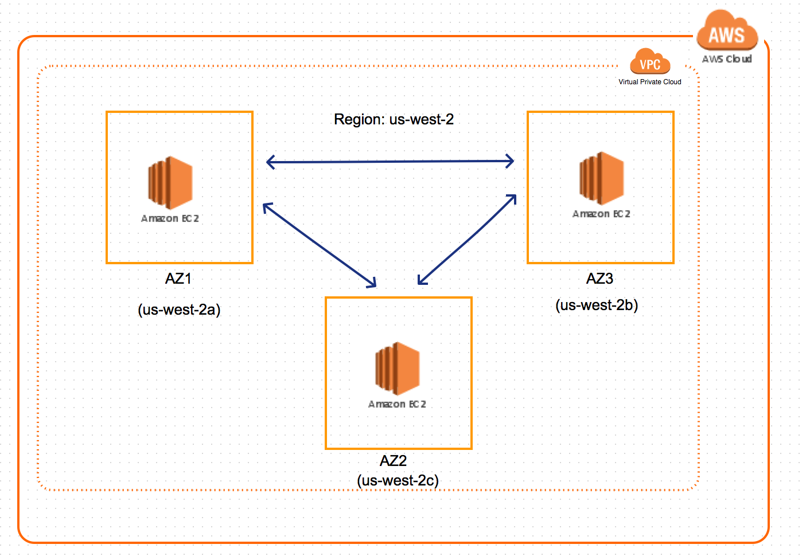

Cassandra On AWS - Part 1 - Setup
Deployment Model
Cassandra will be set up as a multi-node cluster on AWS. AWS is spread over multiple regions and each region has multiple availability zones(AZ) within them. Each region will start with at least 3 nodes in a cluster. The nodes will be spread across different AZ's. Most of the AWS regions have atleast 3 different AZ. In regions where there are less than 3 AZ's, two nodes will share the same AZ.

Fig 1: Cassandra deployment in a region spread over multiple availability zones (AZ)